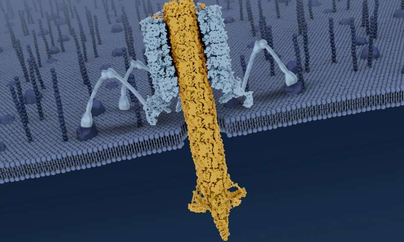

One way to solve the puzzle comes from information theory. Instead of focusing on anatomical traits, like cell walls, SFI President David Krakauer, Nils Bertschinger of the Frankfurt Institute for Advanced Studies, Eckehard Olbrich of the Max Planck Institute for Mathematics in the Sciences, SFI Professor Jessica Flack, and SFI Professor Nihat Ay (also of the Max Planck Institute for Mathematics in the Sciences) look to structured information flows between a system and its environment. "Individuals," they argue, "are best thought of in terms of dynamical processes and not as stationary objects." The individual as a verb: what processes produce distinct identity? Flack stresses that this lens allows for individuality to be "continuous rather than binary, nested, and possible at any level." An information theory of individuality (or ITI) describes emergent agency at different scales and with distributed communication networks (e.g., both ants and colonies at once). The authors use a model that suggests three kinds of individual, each corresponding to a different blend of self-regulation and environmental influence. Decomposing information like this gives a gradient: it ranges from environmentally-scaffolded forms like whirlpools, to partially-scaffolded colonial forms like coral reefs and spider webs, to organismal individuals that are sculpted by their environment but strongly self-organizing. Each is a strategy for propagating information forward through time—meaning, Flack adds, "individuality is about temporal uncertainty reduction." Replication here emerges as just one of many strategies for individuals to order information in their future. To Flack, this "leaves us free to ask what role replication plays in temporal uncertainty reduction through the creation of individuals," a question close to asking why we find life in the first place. Perhaps the biggest implication of this work is in how it places the observer at the center of evolutionary theory. "Just as in quantum mechanics," Krakauer says, "where the state of a system depends on measurement, the measurements we call natural selection dictate the preferred form of the individual. Who does the measuring? What we find depends on what the observer is capable of seeing."
What is an individual? Information theory may provide the answer

Bactericidal nanomachine: Researchers reveal the mechanisms behind a natural bacteria killer
Scientists are one step closer to adapting the bacteria-killing power of a naturally occurring nanomachine, a tiny particle that performs a mechanical action.
In a study published in Nature, a UCLA-led team of researchers describe how the nanomachine recognizes and kills bacteria, and report that they have imaged it at atomic resolution. The scientists also engineered their own versions of the nanomachine, which enabled them to produce variations that behaved differently from the naturally occurring version.
Their efforts could eventually lead to the development of new types of antibiotics that are capable of homing in on specific species of microbes. Drugs tailored to kill only a certain species or strain of bacteria could offer numerous advantages over conventional antibiotics, including lowering the likelihood that bacteria will develop resistance. In addition, the tailored drugs could destroy harmful cells without wiping out beneficial bugs in the gut microbiome, and they could eventually offer the possibilities of being deployed to prevent bacterial infections, to kill pathogens in food and to engineer human microbiomes so that favorable bacteria thrive.
The particle in the study, an R-type pyocin, is a protein complex released by the bacterium Pseudomonas aeruginosa as a way of sabotaging microbes that compete with it for resources. When a pyocin identifies a rival bacterium, it kills the bacterium by punching a hole in the cell's membrane. P. aeruginosa, frequently a cause of hospital-acquired illness, is found in soil, in water and on fresh produce. The germ is commonly studied and its biology is well understood.
Observing a pyocin's molecular structure—in its configurations both before and after that hole-punching—enabled the scientists to figure out the mechanisms by which it recognizes its prey and triggers its killing blow.
The research falls under the banner of a discipline called bioinspired engineering, which aims to develop technology that takes its design cues from nature. The results of the new study could contribute to the development of targeted antibiotics based on a pyocin.
"If you tried to design a pyocin from scratch, you probably couldn't do it," said Z. Hong Zhou, the study's co-corresponding author and the faculty director of the Electron Imaging Center for Nanomachines at the California NanoSystems Institute at UCLA. "It's good to learn from nature, because nature has developed and tested these systems over billions of years. That should help us from an engineering standpoint."
With his colleagues, Zhou—who also is a UCLA professor of microbiology, immunology and molecular genetics—used two imaging technologies: X-ray crystallography, which reveals the structure of crystallized molecules using X-rays, and cryo-electron microscopy, which forms images by detecting electrons rebounding from frozen samples. The team was aided by recent advances in electron microscopy, including higher-speed cameras that directly detect electrons; previous versions of the technique detected electrons indirectly and, as a result, with less detail.
As described in the study, pyocins are elegantly simple and specific killing machines. Earlier research by the leaders of the new study described the pyocin's overall structure, albeit in less detail. The largest part of a pyocin is a cylindrical trunk comprising an outer sheath that surrounds an inner tube—the part that punctures. At the bottom of the trunk is a baseplate with six protruding tendrils. When the nanomachine encounters a bacterial cell, it lands on the cell and the tendrils bind to specific structures on the cell's surface. In the new paper, the scientists described for the first time a six-stranded collar at the top of the pyocin's trunk, which connects the sheath and inner tube and is important for transmitting energy in the process of triggering the pyocin.
The latest study also provided previously unknown information about the mechanical action that takes place when a pyocin is triggered: When at least three of the six tendrils bind to the surface of a bacterial cell, the pyocin recognizes that the cell is the specific type of bacterium it is meant to attack. At that point, the tendrils anchor the pyocin to the cell and cause the baseplate to splay out. This, in turn, causes the outer sheath to collapse, driving the inner tube down and across the surface of the target cell.
Beyond the puncture damage itself, the inner tube leaches energy from the bacterial cell, which causes the cell to die—a detail previously revealed by the researchers. "This is a mechanical system that's exquisitely tuned to couple specific recognition of a target cell with deployment of its lethal blow," said co-corresponding author Jeff F. Miller, UCLA's Fred Kavli Professor of NanoSystems Sciences and the director of CNSI. "Understanding how the system is constructed and how its activity is controlled could be used for building new kinds of nanomachines."
Using standard molecular biology techniques to alter the DNA of P. aeruginosa, the researchers engineered variations of a pyocin. Among the variations were versions in which the trigger was more or less sensitive to the structures on the surface of its target bacteria and to its environment. For example, certain adjustments allowed the nanomachine to overcome its vulnerability to acidic environments. In nature, the pyocin automatically triggers when exposed to a pH of 3.4, about the acidity of sauerkraut, but compared to the natural version, fewer of the engineered pyocins triggered at that pH level.
The ability to tune the sensitivity of the pyocin's trigger has implications for antibiotics that could eventually be developed based on the study: A deadly systemic infection might be met with a "looser" trigger that doesn't discriminate as much in which bacteria the particle attacks, while a more discriminating trigger function could be used to target certain gut infections without causing collateral damage to the microbiome.
A scientist from Pylum Biosciences, a South San Francisco-based startup cofounded by Miller, participated in the research. Pylum has engineered different classes of pyocins as the basis for developing therapies that only attack specific species of bacteria, while overcoming antibiotic resistance and preventing damage to beneficial microbes. One such therapy narrowly targets a bacterium that causes colitis. The therapy has been tested in the lab and in preclinical animal models, and clinical trials in human patients are being planned.

What exactly is a photon?

Peeking into a world of spin-3/2 materials

Scientists find a rule to predict new superconducting metal hydrides

Testing how accurately X-ray lasers can measure the inner workings of biological molecules

Applying mathematics to accelerate predictions for capturing fusion energy

Why didn't the universe annihilate itself? Neutrinos may hold the answer
Speeding-up quantum computing using giant atomic ions